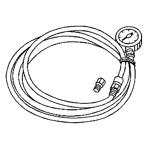
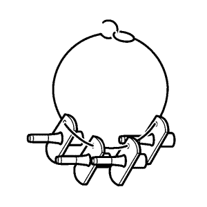
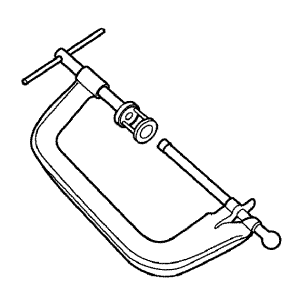
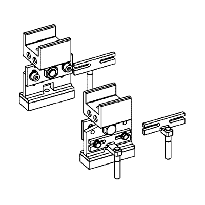
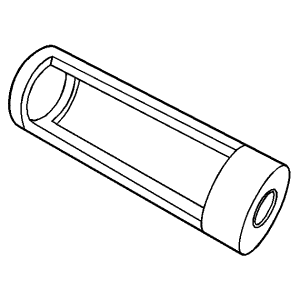
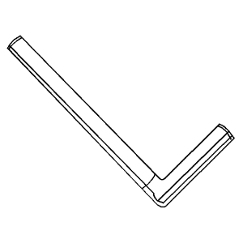
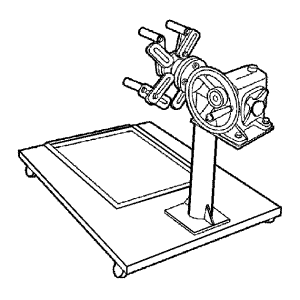

Cruze |
||||||||
|
|
|
|||||||
Ilustración | N.º de herramienta / Descripción |
|---|---|
|
| EN-135 Adaptador |

| EN-470-B KM-470-B DW260-030-01, DW260-030-02 Manómetro angular de par |
|
 | EN-498-B KM-498-B Indicador de presión de aceite |

| GE-571-B MKM-571-B Galga de cuadrante |

| CH-807 KM-807 Tapones de cierre |
|
 | EN-6015 KM-6015 Tapones de cierre |

| EN-8087 J-8087 Calibrador de cilindros |

| EN-45000 KM-J-45000 J-45000 Herramienta de desmontaje |

Herramienta de desmontaje y montaje de la junta de vástago de válvula | EN-46116 Herramienta de desmontaje y montaje de la junta de vástago de válvula |
|
 | EN-46569 Compresor de muelles de válvula |

| EN-47632 Limpiador |

| EN-47649 J-28467 DW110-080 Puente del motor |

| EN-47650 Bastidor de retención |

| EN-47650-030 Extensión |

| EN-47650-050 Carril de montaje |

| EN-47650-250 Adaptador delantero |
|
 | EN-47650-300 Adaptador |
|
 | EN-48247 Adaptador de compresión de muelles de válvula |

| EN-48248 Manómetro de compresión de cilindros |

| EN-48251 Herramienta de montaje del retén de aceite de la parte trasera del cigüeñal |
|
| EN-48259 Herramienta de desmontaje de la sonda Lambda |
|
 | EN-48952 Pasador de sujeción del dispositivo tensor de la correa de accionamiento |
|
| EN-49073 Pasador del tensor de cadena de distribución |
|
| EN-49074 Compresor universal de muelles de válvula |

| CH-49290 Soporte de motor/cambio |
|
 | EN-50057 Soporte de reparación del motor |
|
| EN-50207 Adaptador del interruptor de presión de aceite |
|
| EN-50425 Compresor de segmentos de pistón |
|
| EN-50427 Herramienta de montaje del retén de aceite delantero del cigüeñal |
|
| EN-50428 Herramienta de desmontaje de inyectores |
|
| EN-50429 Adaptador de montaje/desmontaje del sensor de temperatura de escape |
|
| EN-50430 Pasador de bloqueo del módulo del eje de equilibrio |
|
| EN-50431 Adaptador de medición de contragolpes del BSM |
|
| EN-50432 Adaptador de fijación del volante motor |
|
| EN-50433 Adaptador de fijación del piñón del árbol de levas de escape |

| EN-50434 Tapón guardapolvos de la conexión del tubo de distribución de combustible |
|
| EN-50435 Pasador guía |
|
| EN-50436 Herramienta de desmontaje del tornillo de la polea del cigüeñal |
|
| EN-50437 Indicador de altura de PMS del pistón |
|
| EN-50453 Adaptador de compresión del aire |
|
| EN-50454 Manómetro de cilindros |
|
| EN-50457 Comprobador de la presión de combustible |
|
| EN-50517 Adaptador del manómetro de combustible |
| © Copyright Chevrolet. All rights reserved |